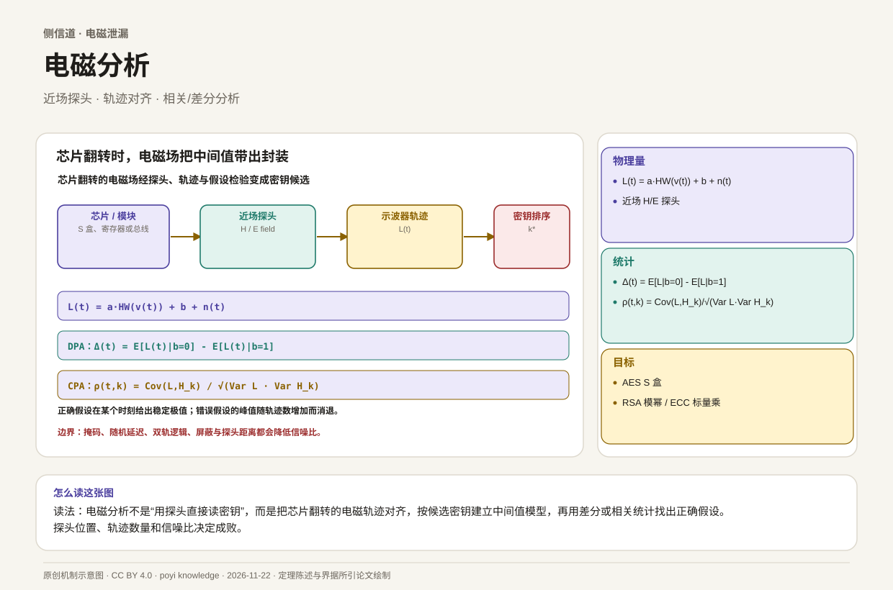
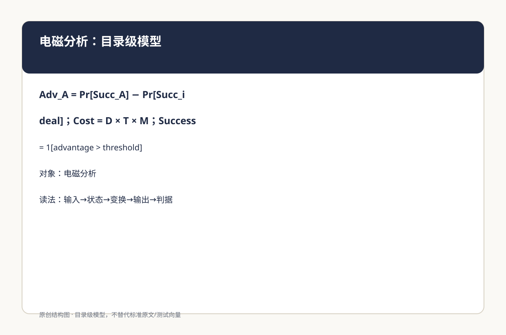

原理与机制
攻击：电磁分析（Electromagnetic Analysis）。### 电磁泄漏的物理入口
CMOS 门在翻转时产生瞬态电流，芯片互连与封装附近形成随运算变化的电磁场。把探头放在解码器、寄存器或总线附近，用示波器采样，就得到一条与时间对齐的电磁轨迹。简化泄漏模型可写成
L(t) = a·HW(v(t)) + b + n(t)，
其中 a 是增益，HW 是中间值的汉明重量，b 是静态偏移，n 是噪声。这个模型不是芯片的完整物理仿真，而是攻击者用来排序密钥假设的近似。### 从轨迹到密钥假设
对每个候选密钥 k，计算目标中间值 v_k(t) 的泄漏模型 H_k(t)，再把它与实际轨迹 L(t) 比较。DPA 比较猜测位为 0/1 的两组轨迹均值差：
Δ(t) = E[L(t) | b=0] - E[L(t) | b=1]。CPA 计算 Pearson 相关系数：
ρ(t,k) = Cov(L(t), H_k(t)) / √(Var L(t) · Var H_k(t))。正确密钥在某个时刻给出稳定极值；错误假设的峰值随轨迹数增加而消退。### 为什么叫“分析”而不是“读取”
电磁探头拾取的是多个模块叠加的近场，必须通过时间对齐、触发、降噪和多次平均把目标运算分离出来。它不直接给出密钥比特，而是把物理泄漏转成可检验的统计假设；轨迹数量、信噪比和探头位置决定能否恢复。

为什么重要
电磁分析和功率分析共享同一类统计核心：选择中间值、建立泄漏模型、按假设分组、比较均值或相关系数。区别在传感器与空间选择性：电磁探头可以靠近局部模块，减少无关电路的叠加，也可能绕开某些封装内的屏蔽。### 为什么防护不能只靠算法
算法层面的掩码、隐藏和常量时间只能降低数据相关泄漏；探头、封装、供电和时钟仍可能把剩余泄漏带出来。评估必须同时看算法实现、物理封装和采集条件。### 对设备设计的含义
智能卡、HSM、TEE、MCU 和硬件钱包都要把侧信道纳入威胁模型。设计者应做泄漏评估，而不只是功能测试；只看“算法是 AES-256”不能推出“设备抗电磁分析”。
应用与实例
1.确定目标运算与中间值，例如 AES 首轮 S 盒输出、RSA 模幂的中间字或 ECC 标量乘的分支。2.固定探头位置，使用外部触发对齐每一次运算；记录多条轨迹和对应输入。3.做去噪、对齐和异常轨迹剔除；估计信噪比与所需轨迹量级。4.对候选密钥计算 DPA 差分或 CPA 相关系数，按峰值排序；对排序靠前的候选做二次验证。5.用已知密钥的测试芯片校准流程，再对目标设备采集；报告要区分“实验室条件”与“远程/非接触条件”。### 典型目标
AES/DES 的 S 盒、RSA 的模幂、ECC 的标量乘、KEM 的解码和硬件钱包的助记词派生，都是常见的电磁泄漏目标。

边界与攻击面
1.掩码：秘密被拆成随机份额，单点轨迹与中间值的相关性被削弱；高阶分析需要更多轨迹和更复杂的模型。2.隐藏：随机延迟、时钟抖动、双轨逻辑、噪声注入和恒定电流逻辑降低对齐与信噪比。3.物理防护：屏蔽、封装内滤波、探头难以接近、设备距离增加。4.实现差异：异步电路、低功耗工艺和强噪声可能让简化汉明模型失效。5.采集条件：触发不稳、轨迹未对齐、探头位置偏移会直接破坏统计。6.授权与证据：没有实验室设备和合法授权，不能把“理论可行”写成“已在实际设备上复现”。电磁分析可以恢复密钥，但不保证对所有设备、所有实现都成功；一次成功也不等于通用攻击工具。报告必须给出设备、探头、轨迹数、信噪比和验证密钥。
历史与背景
2001 年，Quisquater 与 Samyde 系统提出电磁分析（EMA）及其对策；同年 Gandolfi、Mourtel 与 Olivier 在三种 CMOS 芯片上对 DES、COMP128 和 RSA 做实验，报告了完整密钥材料的恢复。此后 DEMA、CPA、模板攻击和高阶分析逐步成为侧信道评估的标准工具。现代安全芯片把屏蔽、掩码、随机延迟和传感器放在一起；评估从“能否恢复一个密钥”转向“在给定轨迹预算和泄漏模型下还剩多少优势”。这也是为什么侧信道评估必须和具体设备的物理封装一起报告。
逐步示例与核验
形式模型与复算步骤
[\mathrm{Adv}^{\mathrm{attack}}_A(\lambda)=\Pr[\mathrm{Game}_A(\lambda)=1]-\frac12]
电磁分析的公开参数、密钥/随机数与消息；变量说明：λ 安全参数；Game 把攻击目标写成挑战-响应游戏。1.定义挑战与获胜条件。2.给攻击者 oracle 访问。3.计算优势并与目标界比较。边界：公式只覆盖已登记的参数与假设；参数取值、标准版本和实现细节仍以来源为准。
参考出处
- Wikipedia search entry for 电磁分析. https://zh.wikipedia.org/w/index.php?search=%E7%94%B5%E7%A3%81%E5%88%86%E6%9E%90
- Handbook of Applied Cryptography (Menezes, van Oorschot, Vanstone). https://www.cacr.math.uwaterloo.ca/hac/